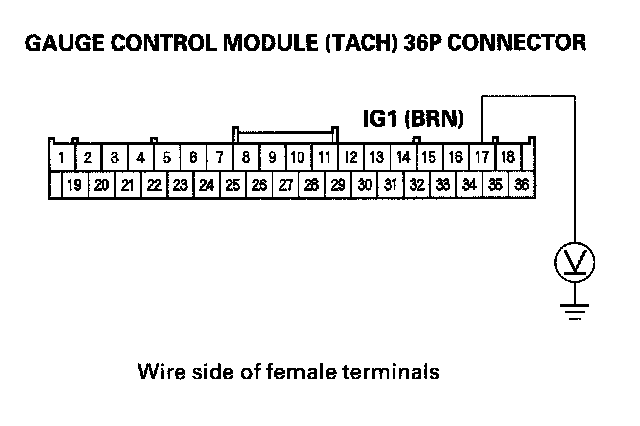

B1036
DTC B1036: IG1 Line Input ErrorNOTE: If you are troubleshooting multiple DTCs, be sure to follow the instructions in B-CAN System Diagnosis Test Mode A.
1. Clear the DTCs with the HDS.
2. Turn the ignition switch OFF, and then back ON (II).
3. Wait for 6 seconds or more.
4. Check for DTCs with the HDS.
Is DTC B1036 indicated?
YES - Go to step 5.
NO - Intermittent failure, the system is OK at this time. Check for loose or poor connection at the gauge control module (tach) 36P connector, and at the under-dash fuse/relay box connector Q (16P). If the connections are good. check the battery condition and the charging system.
5. Check for DTCs with the HDS.
Is DTC B1008 indicated with DTC B1036?
YES - Troubleshoot the indicated DTC.
NO - Go to step 6.
6. Turn the ignition switch OFF.
7. Turn the ignition switch ON (II).

8. Check for voltage between the gauge control module (tach) 36P connector No. 17 terminal and body ground.
Is there battery voltage?
YES - Faulty MICU; substitute a known-good under-dash fuse/relay box and recheck.
NO - Check No. 10 (7.5 A) fuse in the under-dash fuse/relay box. If the fuse is OK, check for an open in the wire between the under-dash fuse/relay box and the gauge control module (tach), or repair a short in the wire between the under-dash fuse/relay box and the gauge control module (tach).